유통관리사-3급 (2019-04-14 기출문제)
1과목: 유통상식
1. 소비자기본법(법률 제15696호, 2018.6.12., 일부개정)에서 소비자의 기본적 권리와 책무에 관한 조항으로 옳지 않은 것은?
- 물품 등을 선택함에 있어서 필요한 지식 및 정보를 제공받을 권리
- 합리적인 소비생활을 위하여 필요한 교육을 받을 책무
- 소비자 스스로의 권익을 증진하기 위하여 단체를 조직하고 이를 통하여 활동할 수 있는 권리
- 물품등의 사용으로 인하여 입은 피해에 대하여 신속·공정한 절차에 따라 적절한 보상을 받을 권리
- 안전하고 쾌적한 소비생활 환경에서 소비할 권리
(정답률: 64%)

2. 유통산업발전법(법률 제14997호, 2017.10.31., 일부개정)에서 정의한 용어 및 설명으로 옳지 않은 것은?
- “매장”이란 상품의 판매와 이를 지원하는 용역의 제공에 직접 사용되는 장소를 말한다.
- “대규모점포”란 하나 또는 둘이상의 연접되어 있는 건물 안에 하나 또는 여러 개로 나누어 설치되는 매장으로 상시 운영되며, 매장면적의 합계가 2천제곱미터 이상이어야 한다.
- “전문상가단지”란 같은 업종을 경영하는 여러 도매업자 또는 소매업자가 일정지역에 점포 및 부대시설 등을 집단으로 설치하여 만든 상가단지를 말한다.
- “유통표준코드”란 상품∙상품포장∙포장용기 또는 운반용기의 표면에 표준화된 체계에 따라 표기된 숫자와 바코드 등으로서 산업통상자원부령으로 정하는 것을 말한다.
- “무점포판매”란 상시 운영되는 매장을 가진 점포를 두지 아니하고 상품을 판매하는 것으로서 산업통상자원부령으로 정하는 것을 말한다.
(정답률: 67%)
3. 아래 글상자에 해당하는 제품들을 주로 취급하는 소매업태로 옳은 것은?
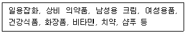
- 드럭스토어(drug store)
- 파머스 마켓(farmer's market)
- 테마파크(theme park)
- 전문점(specialty store)
- 아웃렛 스토어(outlet store)
(정답률: 82%)
4. 도매상의 제조업자를 위한 유통기능으로 가장 옳지 않은 것은?
- 시장확보기능
- 시장정보기능
- 재고유지기능
- 주문처리기능
- 판매촉진기능
(정답률: 62%)
5. 수직적 유통경로 시스템 중 계약형에 대한 설명으로 옳은 것은?
- 제조업자가 유통경로를 소유하고 경영하는 경우 전방통합이라 한다.
- 도매상이나 소매상이 제조시설을 보유한 경우 후방통합이라 한다.
- 치킨, 피자 등 간이음식의 프랜차이즈 본부와 가맹점으로 구성된다.
- 시스템의 핵심은 머천다이징 계획협정을 기본으로 한다는 것이다.
- 가맹점의 점주는 상품기획 및 판촉자료 제작에 최선을 다해야 한다.
(정답률: 67%)
6. 선매품에 대한 설명으로 가장 옳지 않은 것은?
- 많은 검색을 통해 구매를 결정하는 재화
- 보통은 편의품에 비하여 매출이익률이 높음
- 보통은 편의품에 비하여 상품회전율이 낮음
- 구매횟수가 매우 적고 고가품에 해당하는 소비재
- 구두, 양복 등은 선매품에 해당함
(정답률: 50%)
7. 아래 글상자 ( ㉠ )과 ( ㉡ )에 들어갈 용어가 순서대로 옳게 나열된 것은?
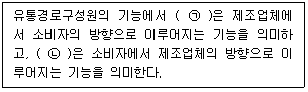
- ㉠ 쌍방흐름기능, ㉡ 전방흐름기능
- ㉠ 전방흐름기능, ㉡ 후방흐름기능
- ㉠ 후방흐름기능, ㉡ 전방흐름기능
- ㉠ 전방흐름기능, ㉡ 쌍방흐름기능
- ㉠ 쌍방흐름기능, ㉡ 쌍방흐름기능
(정답률: 85%)
8. 유통부문의 환경변화에 대한 설명으로 가장 옳지 않은 것은?
- 정보기술의 발달로 소비자의 구매성향 파악이 용이해졌다.
- 의류, 가공제품, 생활용품 등을 판매하는 대형 유통업체가 제조업체에 비해 우월한 지위를 가지기 시작했다.
- 기존에 비해 소비자들이 탈개성화 되어 대량유통이 가능해졌다.
- 제품의 품질이 상향 평준화 되어 제품 자체만으로는 경쟁이 어려운 경우가 발생했다.
- 가격경쟁의 심화로 인해 업체간 유통비용에 대한 관심이 높아졌다.
(정답률: 61%)
9. 정-반-합의 논리에 따라 '전통적인 식품점-슈퍼마켓-셀프서비스형 식품점'이나 '백화점-할인점-할인백화점'의 등장을 설명할 수 있는 이론은?
- 소매수레바퀴의 가설(Wheel of Retailing)
- 아코디언 이론(Retail Accordion)
- 자연도태설(Natural Selection)
- 변증법적 과정(Dialectic Process)
- 소매수명주기의 가설(Retail Life Cycle)
(정답률: 52%)
10. 프랜차이즈 시스템의 구성과 역할에 대한 설명으로 옳지 않은 것은?
- 프랜차이저란 프랜차이즈의 체인본부를 의미한다.
- 슈퍼바이저란 매장 내에서 제품을 책임지고 판매하는 사람을 의미한다.
- 체인본부는 매스컴 등을 활용해 브랜드 인지도를 높이려 노력한다.
- 가맹점주는 인지도가 높은 체인에 가입하여 비교적 안정적인 수입을 얻고자 기대한다.
- 프랜차이지란 프랜차이즈의 체인가맹점을 의미한다.
(정답률: 54%)
11. 유통흐름 상 경로구성원이 가지는 역할 중 도매업자의 주요 역할로 옳지 않은 것은?
- 제품의 집하, 분산 기능
- 가격인하기능
- 물류기능
- 위험분산기능
- 정보전달기능
(정답률: 51%)
12. 직업윤리의 5대 원칙 중 객관성의 원칙에 대한 내용으로 옳은 것은?
- 업무관련하여 정직하게 수행하고, 신뢰를 유지한다.
- 전문가로서의 능력과 의식을 가지고 책임을 다한다.
- 법규를 준수하고 경쟁원리에 따라 공정하게 행동한다.
- 업무의 공공성, 공사를 명확히 구분하고 투명하게 처리한다.
- 고객에 대한 봉사를 최우선으로 하며, 고객만족을 추구한다.
(정답률: 54%)
13. 조직의 기본원칙에 해당하지 않는 것은?
- 직무책임, 권한, 의무가 대등한 삼면등가의 원칙
- 지시를 전달받는 경로가 단일한 명령통일의 원칙
- 한 사람의 관리자가 감독하는 범위를 정하는 통제범위의 원칙
- 분업을 할 경우 관련된 업무끼리 묶어서 전문적으로 수행하게 한다는 전문화 원칙
- 직무 일부를 부하에게 위임할 경우 반드시 관리감독을 해야 한다는 권한위양의 원칙
(정답률: 48%)
14. 직장 내 성희롱에 대한 각각의 역할과 대응에 대한 설명 중 옳지 않은 것은?
- 사업주는 성희롱예방교육을 매년 1회 이상 전 직원을 대상으로 실시해야 한다.
- 고충상담원은 성희롱 고충상담 신청을 받은 경우에는 지체 없이 상담에 응해야 한다.
- 동료가 성희롱 피해를 입은 사실을 인지하게 된 경우, 지체 없이 관계 기관에 신고해야 한다.
- 관리자는 조직 내 성희롱예방규정에 대하여 잘 알고 있어야 하며, 피해자 보호 원칙 또한 구체적으로 알고 있어야 한다.
- 피해자가 행위자의 언행을 사내 게시판에 글로 올리는 경우 법적으로 명예훼손으로 인한 고소 등의 문제가 발생할 수 있으므로 유의해야 한다.
(정답률: 44%)
15. 매일 매장을 오픈하기 전 준비해야 하는 사항에 관한 설명 중 가장 옳지 않은 것은?
- 구매시점(POP)의 위치와 이상 여부를 확인한다.
- 담당 구역의 청결여부를 확인한다.
- 가격표가 정해진 위치에 잘 부착되어있는지 확인한다.
- 흐트러진 상품을 정리정돈한다.
- 천정과 조명기구 등을 포함한 시설 대청소를 실시한다.
(정답률: 83%)
16. 판매원이 갖춰야 할 태도와 관련된 설명 중 가장 옳지 않은 것은?
- 시장지식, 상품지식 등과 같은 각종 지식을 갖춘다.
- 자신의 기술을 확실히 익혀 실천한다.
- 적극적인 사고를 통해 행동하는 것을 습관화한다.
- 습득한 지식을 고객을 위해 바르게 실천하려는 의지를 갖는다.
- 모든 문제해결에 있어 회사의 이익을 최우선으로 고려하여 문제를 축소시킨다.
(정답률: 88%)
17. 경청을 통한 효용에 해당되지 않는 것은?
- 들어준다는 사실이 고객의 기분을 좋게 한다.
- 들어줌으로써 자연스럽고 효과적으로 대화를 리드할 수 있다.
- 고객은 판매원이 경청하는 것을 실감하면 본래 원했던 속마음을 표현할 수 있게 된다.
- 들어줌으로써 미안함을 느끼게 하여 구매를 유도할 수 있다.
- 고객과 호흡을 맞추면서 경청하는 태도는 고객과의 공감대를 형성한다.
(정답률: 85%)
18. 판매원의 고객불만 해결 방법으로 가장 옳지 않은 것은?
- 고객에게 정중하게 사과한다.
- 고객의 분노에 깊이 공감한다.
- 고객의 불만을 끝까지 경청한다.
- 일단은 시간을 끌면서 화가 풀릴 때까지 기다린다.
- 고객이 납득할 수 있는 해결방안을 제시한다.
(정답률: 84%)
19. 다음의 설명에 해당하는 도매상으로 가장 옳은 것은?
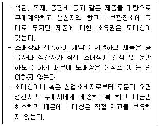
- 대리 도매상(agent wholesaler)
- 직송 도매상(drop shipper)
- 트럭 도매상(truck jobber)
- 완전서비스 도매상(full service wholesaler)
- 현금 무배달 도매상(cash and carry wholesaler)
(정답률: 56%)
20. 소매상의 분류에 대한 설명으로 가장 옳지 않은 것은?
- 점포의 유무에 따라 점포 소매상과 무점포 소매상으로 분류된다.
- 소유 및 운영주체에 따라 크게 독립소매기관과 체인으로 분류된다.
- 상품의 다양성 및 구색에 따라 구분하면 백화점과 전문점은 동일한 유형에 해당된다.
- 마진과 회전율로 소매상을 구분하는 것은 상품구성전략에 의한 분류이다.
- 고객이 필요로 하는 모든 서비스를 판매원들이 제공하는 전문점이나 백화점은 완전서비스 소매상에 속한다.
(정답률: 58%)
2과목: 판매 및 고객관리
21. 판매자가 제품이나 서비스에 대해 알아야 할 5W2H에 대한 설명으로 옳지 않은 것은?
- where - 사용장소 : 어디에서 사용되는가?
- who – 사용자 : 누가 사용하는가?
- why – 사용목적 : 왜 사용하는가?
- when – 사용시기 : 언제 사용하는가?
- how much – 사용방법 : 어떻게 사용하는가?
(정답률: 70%)
22. 고객이 매장 직원에게 불평 사항을 전달하고자 할 때, 매장 직원이 취해야 할 불평처리 방법으로 가장 옳지 않은 것은?
- 고객 말을 막지 않고 끝까지 정중한 예의로 경청한다.
- 판매사원 개인을 향한 클레임이 아님을 알고 감정적으로 대처하지 않는다.
- 도가 지나친 요구는 서투르게 결론을 내리지 않고 신중히 대처한다.
- 고객의 불평이 감지되면 불평을 듣지 않고 바로 상급자에게 인계한다.
- 선입관에 사로잡히지 말고 쓸데없는 말을 최대한 삼간다.
(정답률: 85%)
23. 아래 글상자에서 설명하는 용어로 옳은 것은?
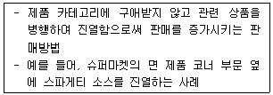
- 크로스 머천다이징(Cross merchandising)
- 글로벌 머천다이징(Global merchandising)
- 팀 머천다이징(Team merchandising)
- 비쥬얼 머천다이징(Visual merchandising)
- 매입정책
(정답률: 72%)
24. 상품구색에 대한 내용으로 옳지 않은 것은?
- 상품구색의 깊이를 깊게하기 위해 품목수를 늘리면 특정상품 계열은 충실한 품목구성을 유지할 수 있으나, 다양한 상품 계열을 취급하기 어려워 상품구색의 넓이가 좁아질 수 있다.
- 상품구색의 일관성이란 점포에서 취급하는 각 상품계열 사이에 상호 관련성이 어느 정도 있는가를 나타내는 기준이다.
- 상품 구색의 깊이가 깊고 상품계열 수가 많아 구색의 넓이가 넓은 경우 소비자를 점포로 흡입할 수 있는 능력이 좋아 상권을 크게 할 수 있다.
- 얇고 넓은 상품구색을 채택하는 유통기업은 매출액 회전율이 높지 않은 품목은 제거하고 회전율이 높은 품목만을 취급하는 경향이 있다.
- 깊고 좁은 상품구색을 채택하는 유통기업은 다양한 상품선택의 기회를 제공함으로써 고객의 욕구를 충족시키려 한다.
(정답률: 51%)
25. 아래 글상자의 보기 중 생활필수품에 대한 설명으로 옳은 것은?
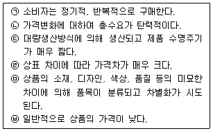
- ㉠, ㉢
- ㉢, ㉥
- ㉠, ㉥
- ㉡, ㉢, ㉣
- ㉡, ㉤, ㉥
(정답률: 59%)
26. 아래 글상자가 설명하는 상품 진열 범위로 옳은 것은?
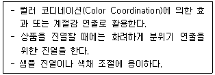
- Golden Line
- Stock Space
- Semi Stock Space
- Mood Space
- Bottom Line
(정답률: 68%)
27. 아래 글상자의 내용에 부합되는 매장효율성의 중요한 측정 지표(KPI)로 가장 옳은 것은?
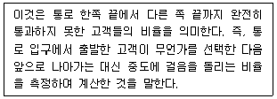
- 회전율(Turnover rate)
- 레버리지 비율(Leverage rate)
- 회귀율(Homing rate)
- 반품률(Return rate)
- 부메랑 비율(Boomerang rate)
(정답률: 69%)
28. 점포의 외관에 대한 내용으로 옳지 않은 것은?
- 점포의 외관은 통행인이나 자동차 승객들의 눈에 뚜렷하게 구별될 수 있는 시각성이 좋아야 한다.
- 점포의 외관이 목표소비자를 선별하는 기능을 수행하길 원한다면 목표소비자가 아닌 사람은 자사점포를 출입하지 않도록 해야 할 필요가 있다.
- 대중을 상대로 하는 소비자 흡인형 점포는 입구와 내부를 밝게 한다.
- 소비자 흡인형 점포는 통로를 명확하고 넓게 설정해야 한다.
- 점포의 바닥과 점포 밖 보도의 높이를 가능한 다르게 해야 한다.
(정답률: 46%)
29. 아래 글상자의 ( )안에 들어갈 용어로 옳은 것은?
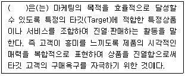
- IP(Item Presentation)
- PP(Point of Sale Presentation)
- VP(Visual Presentation)
- POP(Point of Purchase) advertising
- VMD(Visual Merchandising)
(정답률: 41%)
30. 아래 글상자가 설명하는 레이아웃의 종류로 옳은 것은?
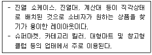
- 자유형 레이아웃
- 경주로형 레이아웃
- 수평형 레이아웃
- 격자형 레이아웃
- 수직형 레이아웃
(정답률: 74%)
31. 자사 제품 라인에 비대칭적인 열등한 속성을 보유한 새로운 브랜드를 추가하면 추가된 브랜드에 비해 기존브랜드가 훨씬 좋아 보인다는 개념을 설명하는 용어로 옳은 것은?
- 부분적 리스트 제시효과
- 유인효과
- 교환대조효과
- 타협효과
- 구성효과
(정답률: 41%)
32. 포장에 대한 설명으로 옳지 않은 것은?
- 포장은 용기를 포함하여 제품을 감싸는 물체를 총칭하는 것이다.
- 포장은 제품에 대해 고객이 호의적인 인상을 가지고 구매의사 결정을 내리는 것과는 무관하다.
- 포장의 본원적 기능은 제품의 보호이다.
- 포장은 유통업체와 소비자에게 운반용이성을 제공한다.
- 포장은 제품의 이미지를 향상시켜 주는 기능을 갖는다.
(정답률: 76%)
33. 대형마트나 슈퍼마켓 등에서 식품시식판매를 쉽게 볼 수 있다. 다음 중 식품시식매장의 매출 증대를 위한 판매기법으로 옳지 않은 것은?
- 시식 식품, 시식 용기부터 시식 담당자 차림새까지 최대한 청결을 유지한다.
- 거리낌 없이 시식할 수 있는 분위기를 만들어 자연스러운 구매가 이뤄지도록 한다.
- 주력 상품의 경우 한 번의 시식이 아닌 지속적이고 반복적인 시식 계획을 통해 인지도를 높인다.
- 시식 기간이 끝난 후에도 매출을 유지해야 하므로 평상시 진열위치를 알려준다.
- 가능한 한 다양한 손님들을 만나야 하므로 매장 내 위치를 바꿔가며 시식을 진행한다.
(정답률: 78%)
34. MOT(Moment Of Truth)에 대한 설명으로 옳지 않은 것은?
- MOT는 고객이 기업의 종업원 또는 특정 자원과 접촉하는 순간을 의미한다.
- 여러 번의 결정적 순간 중 한 가지만 나쁜 경우에도 한순간에 고객을 잃어버릴 수 있다.
- MOT는 지극히 짧은 순간에 이루어지기 때문에 서비스품질에 대한 인상을 좌우하지는 않는다.
- 호텔 같은 경우 소비자가 로비에 들어섰을 때에도 MOT가 발생할 수 있다.
- MOT는 서비스 품질에 대한 인식에 결정적인 역할을 하기 때문에 흔히 결정적 순간으로도 부른다.
(정답률: 79%)
35. 올바른 판매화법으로 가장 옳지 않은 것은?
- 부정형으로 이야기하지 말고 긍정형으로 이야기한다.
- 명령형으로 이야기하지 말고 부탁형으로 이야기한다.
- 칭찬과 감사의 말을 자주 사용한다.
- 거절할 경우에는 말끝을 단호하게 끝낸다.
- 공감과 동의를 표현하며 따뜻하게 이야기한다.
(정답률: 85%)
36. 아래 글상자의 설명과 관련이 깊은 서비스의 특성으로 옳은 것은?
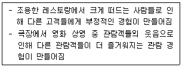
- 무형성
- 비분리성
- 소멸성
- 이질성
- 저장성
(정답률: 45%)
37. 상품과 서비스의 관계를 분류한 자료이다. ㉠~㉤에 속하는 상품이나 서비스의 설명과 그 예로 옳지 않은 것은?
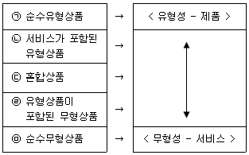
- ㉠ - 서비스 요소가 전혀 없는 제품으로 설탕, 소금, 치약
- ㉡ - 무형성이 우세하나 유형이 부가된 유형상품으로 TV, 에어컨 판매와 판매 후 서비스
- ㉢ - 제품과 서비스가 동등한 상품으로 레스토랑의 좋은 서비스와 좋은 음식
- ㉣ - 항공사가 판매하는 비행기의 탑승권과 제공되는 제반 서비스
- ㉤ - 무형적 서비스가 우세하고 유형서비스는 고객들이 관심이 없는 것으로 법률, 세무상담
(정답률: 40%)
38. 아래 글상자의 상황에서 가장 적절한 서비스품질 측정 방법(도구)은 무엇인가?
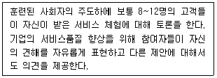
- 고객 불평 호소에 대한 보고서
- 판매 후의 설문 조사
- 고객 포커스 그룹 인터뷰
- 종업원 설문조사
- 전체 시장에 대한 서비스품질 설문 조사
(정답률: 57%)
39. 파생서비스(Derived service)는 유형상품으로부터 파생되는 가치라 정의된다. 즉 상품자체가 아니라 상품에 의해서 제공되는 서비스를 의미한다. 다음 중 파생서비스로 보기에 가장 옳지 않은 것은?
- 택시에 의한 이동서비스
- 의약품에 의한 의료서비스
- 미용 가위에 의한 미용서비스
- 컴퓨터에 의한 정보와 자료정리서비스
- 법률법인의 법률자문서비스
(정답률: 53%)
40. 판매촉진 수단 중 경품에 대한 설명으로 옳지 않은 것은?
- 점포에 비치된 유효한 양식을 채움으로써 특정한 부상을 받을 수 있는 선택권을 부여하는 촉진방법이다.
- 참여가 쉽고 시간이 덜 소요되기 때문에 강한 소구력을 가진다.
- 장기적인 매출증대 효과를 얻기 위한 촉진 방법이다.
- 직접적인 매출증대 효과를 얻기 위한 판촉수단으로 이용된다.
- 소비자와의 호의적 거래관계를 형성하는데 도움이 된다.
(정답률: 56%)
41. 아래 글상자의 ( )안에 들어갈 용어로 옳은 것은?
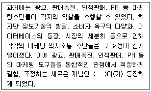
- IMC(Integrated Marketing Communication)
- EDI(Electronic Data Interchange)
- POS(Point Of Sales)
- CRM(Customer Relationship Management)
- SCM(Supply Chain Management)
(정답률: 45%)
42. 상용고객 프로그램에 대한 설명으로 옳은 것을 모두 고르면?
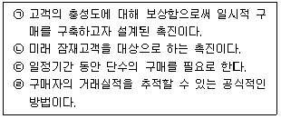
- ㉠
- ㉢
- ㉣
- ㉡, ㉣
- ㉠, ㉢
(정답률: 25%)
43. 판매원이 고객 응대 시 주의해야하는 것으로 옳지 않은 것은?
- 고객의 의견에 즉시 반대하는 “안됩니다.” 등의 말은 삼가한다.
- “사기 싫으면...” 등의 격렬한 말투로 이야기 하지 않는다.
- “바빠 죽겠는데....” 등의 혼자말로 푸념하지 않는다.
- “이 곳에 처음 와보시는가 보네요.” 등의 비꼬는 식으로 이야기하지 않는다.
- 고객의 의견을 듣던 중에 의문이 생기더라도 질문을 하는 것은 예의에 어긋나는 것이므로 질문하지 않는다.
(정답률: 83%)
44. 아래 글상자의 ( )안에 들어갈 용어로 옳은 것은?
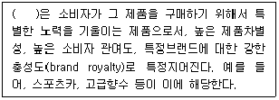
- 편의품
- 전문품
- 선매품
- 충동품
- 긴급품
(정답률: 68%)
45. 마케팅 믹스 7P전략에는 물리적환경(Physical evidence), 프로세스(Process), 사람(People)이 포함되어 있다. 다음 중 그 예시가 올바르게 짝지어진 것은?
- 물리적 환경(Physical evidence) - 고정고객관리제도
- 물리적 환경(Physical evidence) - 오피니언리더
- 프로세스(Process) - 동기부여제도
- 프로세스(Process) - 마일리지제도
- 사람(People) - 직원의 유니폼
(정답률: 37%)